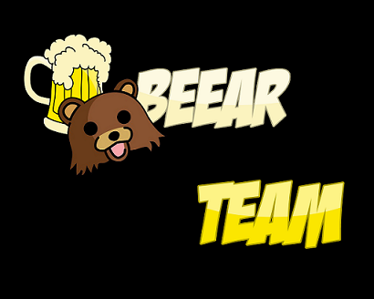

Le 26 novembre 2012
Bonjour à tous!!
La Beear Team est heureuse de vous annoncer le commencement du projet HoriZon!
Bonjour à tous!!
La Beear Team est heureuse de vous annoncer le commencement du projet HoriZon!
Validation du Cahier des charges!!
Nous vous mettons à disposition notre cahier des charges (en LaTeX et en PDF) dans l'onglet Download
Logo de la Beear Team
Nous vous présentons le logo de notre groupe!
En préparation pour la première soutenance!
Le projet avance doucement mais surement. Le travail d'équipe nous permet de bien avancer, de nous motiver et de nous aider les uns les autres
Le jour de la première soutenance a sonné!
Nous avons passé notre soutenance et sommes heureux du travail que nous avons fourni pour ce premier projet!
Vous pouvez dès à présent télécharger notre rapport de première soutenance dans l'onglet Download
Nouvelles à propos de la première soutenance!!
Notre professeur Krisbool ayant 10 minutes de retard, nous avons pu profiter de ce laps de temps pour nous entraîner encore plus longtemps sur notre oral.
Nous sommmes fiers et heureux de vous dire que nous avons obtenu la note de 15/20 pour notre projet: ce qui est un bon début!! Nous espérons faire encore mieux la prochaine fois!
Finalisation pour la deuxième soutenance!!
Nous préparons notre oral pour cette deuxième soutenance!!
C'est parti pour la deuxième soutenance!!
Nous avons pu faire pour cette soutenance:
- un inventaire
- un gestionnaire de maps
- un HUD
- résolution de certains bugs
Préparation de la troisième soutenance!
Il nous reste certains bugs à gérer et l'oral à préparer: ça devrait aller!
La troisième soutenance approche!!
Nous avons réglé les bugs! Nous essayons de voir ce que nous pourrions faire en plus et nous préparons notre oral.
Passage de la troisième soutenance!
Nous sommes un peu deçu car notre jeu à crashé mais nous avons tout de même un jeu bien avancé et nous espérons que ce bug ne sera pas puni trop sévèrement.
Vous pouvez dès à présent télécharger notre rapport de troisième soutenance dans l'onglet Download
Résultat de la troisième soutenance!!
Nous avons obtenu la note de 14.5/20! Nous espérons encore améliorer notre jeu pour la soutenance finale!
Préparation de la dernière soutenance!!
Nous avons bien avancé le jeu. Nous avons donc fait un trailer rien que pour vous!
Vous pouvez allez le voir sur notre page Facebook!
HoriZon est maintenant téléchargeable!
Vous pouvez dès à présent jouer à HoriZon